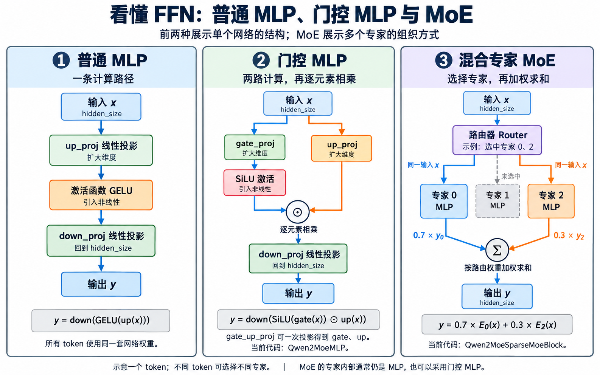

| 图中组件 | 一句话说明 |
|---|---|
输入 x | 当前 token 的隐藏向量，维度为 hidden_size。 |
up_proj | 线性投影(Linear Projection)，将输入向量扩展到中间维度。 |
激活函数 GELU | 激活函数(Activation Function)，对投影后的元素进行非线性变换。 |
down_proj | 线性投影，将中间向量转换回 hidden_size。 |
输出 y | 本模块处理后的 token 向量，维度与输入相同。 |
| 图中组件 | 一句话说明 |
|---|---|
输入 x | 同上。 |
gate_proj | 将输入投影为门控分支(gate)的向量。 |
up_proj | 同上。 |
激活函数 SiLU | 激活作用同上，这里使用 SiLU 并作用于 gate 分支。 |
逐元素相乘 ⊙ | 计算 SiLU(gate) × up，得到门控后的中间向量。 |
down_proj | 同上。 |
输出 y | 同上。 |
gate_up_proj | 将 gate、up 两路权重合并，通过一次线性投影同时得到两路结果。 |
Qwen2MoeMLP | 当前 Qwen3.5-0.8B 使用的门控 MLP 实现类。 |
| 图中组件 | 一句话说明 |
|---|---|
输入 x | 同上。 |
| 路由器(Router) | 根据当前 token 的向量选择专家，并给出用于合并结果的路由权重。 |
| 专家 0、专家 2 | 被选中的专家分别用自身权重对同一个 x 做 MLP 计算，内部可采用上面的门控结构。 |
| 专家 1 | 当前 token 未选中这个专家，因此它不参与这个 token 的计算。 |
权重 0.7、0.3 | 示例中的路由权重(Routing Weights)，分别决定两个专家输出的贡献。 |
加权求和 Σ | 计算 0.7 × y0 + 0.3 × y2，合并被选中专家的输出。 |
输出 y | 同上。 |
Qwen2MoeSparseMoeBlock | 当前项目中负责专家路由、专家计算和结果合并的 MoE 前馈模块实现类。 |